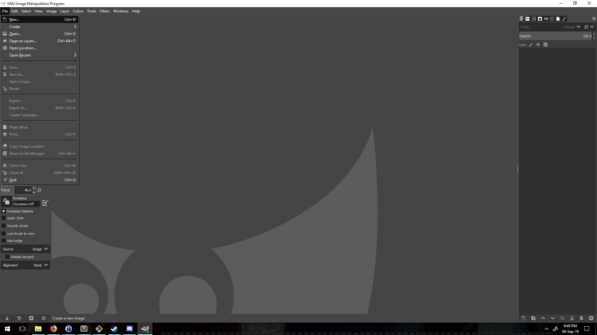
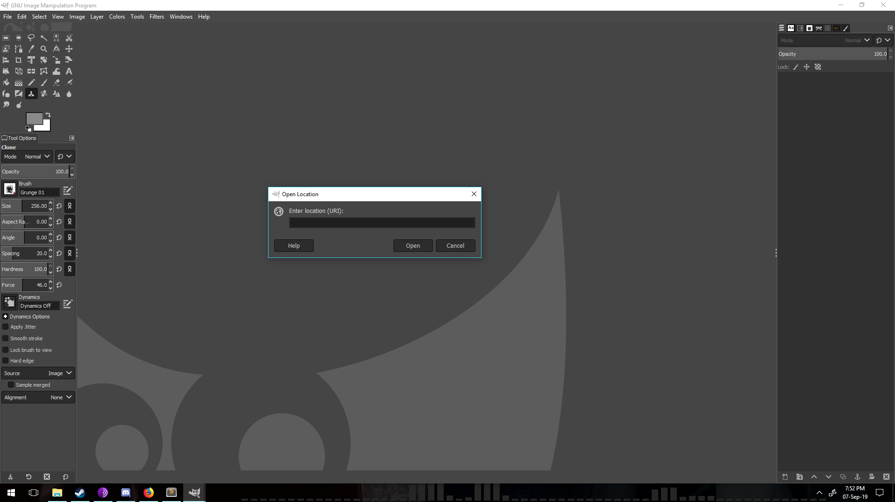
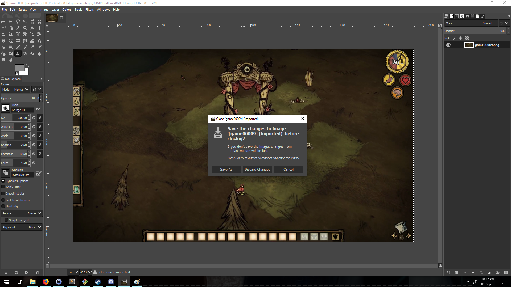

Today I decided I wanted to mess around with some ML. I wanted to try and make an image classifier for this game character from the game Don't Starve Together,
maybe for future use with a RL agent.
(That isn't the focus of this post though)
So I recorded myself playing the game for maybe 30 minutes.
I converted all the frames of the video into single images. The total images is 8162 images (Some 15.4 GB!). Now there is no way I am going to sit around crop out the character
I want to create my dataset for training. So I decided to have a G1ANT Robot do that for me!
Here's The code for the robot:
addon ui version 4.101.0.0
addon core version 4.101.0.0
addon language version 4.103.0.0
♥savedirectory= ‴E:\GeneralDev\DST\Data\Cropped\‴
♥filename=game0000
♥iteration = integer0
call StartGimp
while ⊂♥iteration < 8162⊃
♥iteration = ♥iteration + 1
call OpenAndCropImages fileno ♥iteration
end
procedure StartGimp
keyboard ⋘WIN⋙gimp⋘ENTER⋙
waitfor.ui ‴/ui[@name='GNU Image Manipulation Program']/descendant::ui[@id='MenuBar']/ui[@name='System']‴
end
procedure OpenAndCropImages fileno
♥clipboard = ‴E:\GeneralDev\DST\Data\♥filename♥fileno.png‴
keyboard ⋘ALT+F⋙
keyboard ⋘DOWN 4⋙
keyboard ⋘ENTER⋙
delay 1
keyboard ⋘CTRL+V⋙
delay 1
keyboard ⋘ENTER⋙
delay 1
keyboard ⋘ALT+S⋙
keyboard ⋘ENTER⋙
keyboard ⋘ALT+D⋙
keyboard ⋘ENTER⋙
delay 3
keyboard ⋘ALT+BS⋙
keyboard ⋘SHIFT+CTRL+E⋙
delay 10
keyboard ♥savedirectory+♥filename+♥fileno
keyboard ⋘ENTER⋙
delay 5
keyboard ⋘ENTER⋙
delay 2
keyboard ⋘CTRL+W⋙
keyboard ⋘LEFT⋙
keyboard ⋘ENTER⋙
end
Let's first look at the first couple of variables:
♥savedirectory=‴E:\GeneralDev\DST\Data\Cropped\‴
♥filename=game0000
♥iteration = integer0
♥savedirectory= ‴E:\GeneralDev\DST\Data\Cropped\‴ is used to store the location of the cropped image.
The file names of all the images have a similar pattern,
all of them start with "game0000", only the last few digits change. So just by altering the last few zeros (by adding one per iteration of the while loop),
we can access
all the files in the folder. So by concatenating the variable ♥iteration, we can get the names of the files we want to open.
Next we have the two main procedures:
StartGimp and
OpenAndCropImages
StartGimp when called opens GIMP up, by pressing the win key on the keyboard and types in "GIMP" and hits enter and waits for the window to open up. OpenAndCropImages is where most of the work happens. The line class="line">♥clipboard = ‴E:\GeneralDev\DST\Data\♥filename♥fileno.png‴ stores the path of the
file to be opened onto the clipboard, which can be pasted later.
The command "keyboard ⋘ALT+F⋙" selects the file menu.
The Command "keyboard ⋘DOWN 4⋙" presses the down arrow four times to get to the "Open Location" menu

We then set a delay of 1 second with the command "delay 1" to wait for the menu to pop up and then when paste the contents of the clipboard.

We set another delay of 1 second for the file to open up and then we select the whole image with ALT+S. We shrink the image by using the shortcut key "ALT+D"
issued by the command "keyboard ⋘ALT+D⋙""
The command keyboard ⋘alt+bs⋙ crops the image to selection.>
"Keyboard ⋘SHIFT+CTRL+E⋙" opens the file export menu. We set a 10 second delay since it takes time for the export window to load up and then we hit enter. We then close the current view by pressing CTRL+W, pressing left arrow to select the discard option and hitting enter./p>

This process is repeated for the remainder of the files.
Note: Even though the robot eliminates the tedium of cropping images repeatedly and possible carpal tunnel syndrome, 8000+ files is still a lot to process. So it will take a fairly long time.
Here is a link to the gist file!